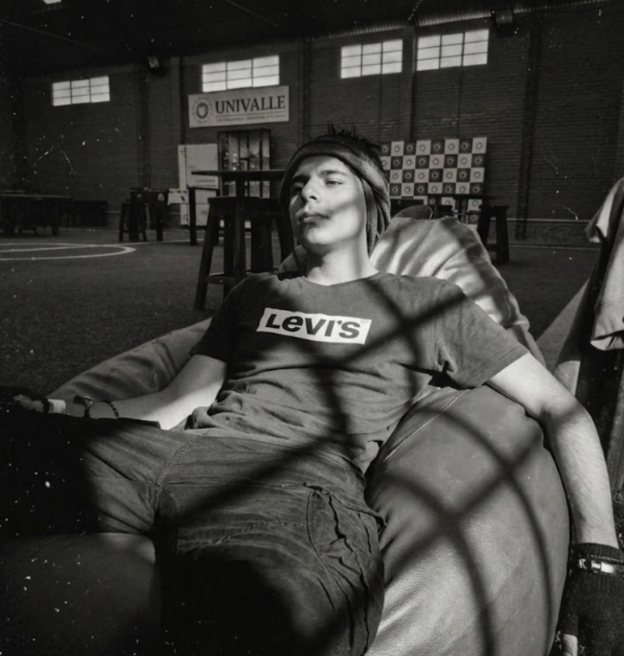

Sobre mí
Soy Juan Grover Castelo Ayaviri, tengo 18 años y actualmente soy estudiante de 3er semestre en la Universidad Univalle en la ciudad de Sucre. Me apasiona la tecnología, la innovación y el desarrollo de soluciones que integren creatividad con ingeniería.
Además de mi formación académica, soy jugador avanzado de Minecraft, donde he desarrollado habilidades estratégicas, pensamiento lógico y creatividad aplicada a la resolución de problemas. También disfruto animar y dibujar, actividades que fortalecen mi pensamiento visual y mi capacidad para diseñar proyectos innovadores.
Proyectos Destacados
🔹 Prótesis de brazo robótico: Proyecto enfocado en el diseño y desarrollo de una prótesis funcional, integrando principios de mecánica con servomotores, electrónica y programación, con el objetivo de aportar soluciones tecnológicas accesibles.
🔹 Dron para cuidado de hectáreas: Desarrollo de un sistema aéreo con sensores de temperatura, viento y humedad para el monitoreo agrícola, orientado a optimizar el control y análisis de cultivos mediante tecnología inteligente.
🔹 Investigación sobre comercialización de la órbita baja: Desarrollo conceptual del servicio global FireMap, una plataforma web orientada a la prevención y monitoreo de incendios forestales utilizando datos satelitales de órbita baja. El sistema integra información de temperatura, humedad del suelo y viento obtenida de satélites para detectar puntos de ignición, monitorear incendios activos e identificar zonas de alto riesgo. El proyecto analiza la viabilidad tecnológica y comercial del uso de datos espaciales como modelo de servicio sostenible a nivel mundial.
Contacto
📍 Sucre
📞 +519 61900756
✉ juavesto@gmail.com
